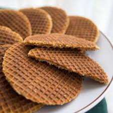
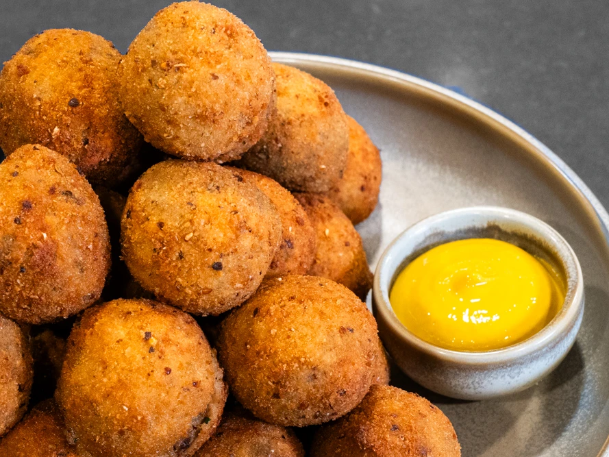

Ristoranti e cibo ad Amsterdam
Ristoranti consigliati
Nome
Cucina
Prezzo medio
Posizione
Sito web
The Pancake Bakery
Olandese / Pancake
€15-25
Indicazioni
Visita
Foodhallen
Street food internazionale
€10-20
Indicazioni
Visita
Moeders
Tradizionale olandese
€20-30
Indicazioni
Visita
Piatti tipici
Stroopwafel
– Biscotto sottile con caramello

Bitterballen
– Polpettine fritte olandesi

Frikandel
– Salsiccia fritta speziata
← Torna alla homepage